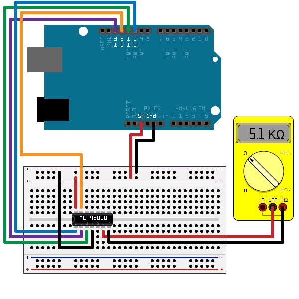

Communicate with SPI Device on Arduino® Hardware
This example shows how to use the MATLAB® Support Package for Arduino® Hardware to use SPI interface to communicate with MCP42010 Digital Potentiometer.
Contents
Overview of MCP42010 Digital Potentiometer
The MCP42010 device is a 256-position 10KOhm potentiometer SPI device with two independent channels.
It has channel 1 on pin 5(PB1), 6(PW1) and 7(PA1), and also channel 0 on pin 10(PB0), 9(PW0), 8(PA0). Pin 6 and pin 9 are wiper pins. This example uses CS, SCK, SI, SO, VDD, VSS, PB1, PW1 and PA1.
Hardware setup
1) Connect the SI, SO, SCK, CS, VDD and VSS pins of a MCP42010 10KOhm digital potentiometer to the Arduino hardware. This example uses an Arduino Uno board with the following connection.
- SI(MOSI) - digital pin 11
- SO(MISO) - digital pin 12
- SCK - digital pin 13
- CS - digital pin 10
- VDD - 5V
- VSS - GND
If you are using a different board, make sure you connect to the correct pins.
2) Connect a multimeter to PA1 and PW1 to measure the resistance.

Control the digital potentiometer
Create an arduino object and include the SPI library.
a = arduino();
Or, you can explicitly specify it in the Libraries Name-Value pair at creation of arduino object.
a = arduino('com22', 'uno', 'Libraries', 'SPI');
Create an spidev object and specify the pin number for chip select.
d_pot = spidev(a, 10);
Send two bytes of data to change the resistance. Since we are controlling channel 1, the first byte should be 0b00010010 which is 12 in hex. The second byte is the new register data in the range of 0 and 255. The following commands change the resistance of the potentiometer gradually.
Rab = 10*1000; Rw = 52; % actual wiper resistance for regVal = 0:50:250 pot_resistance = Rab*regVal/256+Rw; writeRead(d_pot, [hex2dec('12'), regVal], 'uint8'); fprintf('Current resistance is %d Ohm\n', pot_resistance); pause(2); end
Current resistance is 52 Ohm Current resistance is 2.005125e+03 Ohm Current resistance is 3.958250e+03 Ohm Current resistance is 5.911375e+03 Ohm Current resistance is 7.864500e+03 Ohm Current resistance is 9.817625e+03 Ohm
The code runs and displays the readings of the potentiometer.
Clean up
Once the connection is no longer needed, clear the associate object.
clear d_pot a